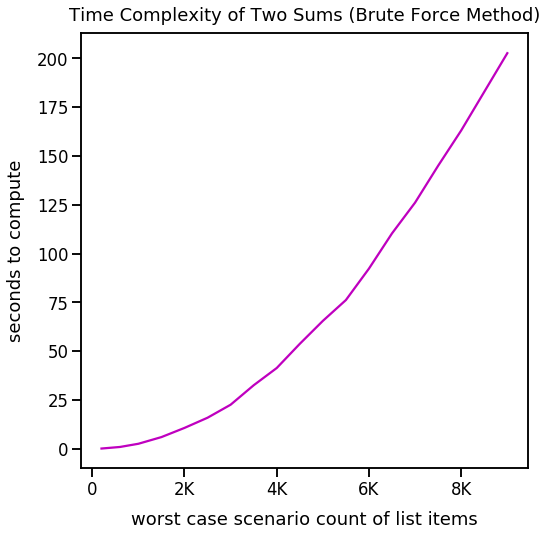
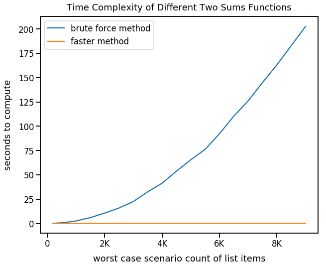

Two Sums (via Leetcode)
- September 23, 2018 • 20 min read
- Key Terms: functions, loops, lists, dictionaries
This example was found on Leetcode.
In this tutorial, I'll walk extensively through my logic for solving this problem.
Problem statement:
Given an array of integers, return indices of the two numbers such that they add up to a specific target.
You may assume that each input would have exactly one solution, and you may not use the same element twice.
Example:
Given nums = [2, 7, 11, 15], target = 9,
Because nums[0] + nums[1] = 2 + 7 = 9,
return [0, 1].
If you'd just like to see the answer, this link scrolls down the page to it.
Import Modules
import matplotlib.pyplot as plt
import matplotlib.ticker as tick
import seaborn as sns
import sys
import numpy as np
from time import time
import logging
% matplotlib inline
Visualization Setup Code
def reformat_large_tick_values(tick_val, pos):
"""
Turns large tick values (in the billions, millions and thousands) such as 4500 into 4.5K and also appropriately turns 4000 into 4K (no zero after the decimal).
"""
if tick_val >= 1000000000:
val = round(tick_val/1000000000, 1)
new_tick_format = '{:}B'.format(val)
elif tick_val >= 1000000:
val = round(tick_val/1000000, 1)
new_tick_format = '{:}M'.format(val)
elif tick_val >= 1000:
val = round(tick_val/1000, 1)
new_tick_format = '{:}K'.format(val)
elif tick_val < 1000:
new_tick_format = round(tick_val, 1)
else:
new_tick_format = tick_val
# make new_tick_format into a string value
new_tick_format = str(new_tick_format)
# code below will keep 4.5M as is but change values such as 4.0M to 4M since that zero after the decimal isn't needed
index_of_decimal = new_tick_format.find(".")
if index_of_decimal != -1:
value_after_decimal = new_tick_format[index_of_decimal+1]
if value_after_decimal == "0":
# remove the 0 after the decimal point since it's not needed
new_tick_format = new_tick_format[0:index_of_decimal] + new_tick_format[index_of_decimal+2:]
return new_tick_format
Setup Format of Logging Messages
logging.basicConfig(level=logging.INFO, format='%(asctime)-25s %(levelname)-7s %(lineno)-4s %(message)-8s')
Simple Problem Setup Data
nums = [2, 7, 11, 15]
target = 9
The Brute Force Approach: O(n^2) Time Complexity
The first solution that came to my mind was to calculate all possible combinations through a nested for loop.
In a nested for loop, for each item in the list, I'll compare it to all items in the list. Let's setup that logic below.
for num_outer in nums:
for num_inner in nums:
logging.info("outer loop value: {0} and inner loop value: {1}".format(num_outer, num_inner))
2018-09-26 11:27:32,408 INFO 3 outer loop value: 2 and inner loop value: 2
2018-09-26 11:27:32,410 INFO 3 outer loop value: 2 and inner loop value: 7
2018-09-26 11:27:32,411 INFO 3 outer loop value: 2 and inner loop value: 11
2018-09-26 11:27:32,412 INFO 3 outer loop value: 2 and inner loop value: 15
2018-09-26 11:27:32,413 INFO 3 outer loop value: 7 and inner loop value: 2
2018-09-26 11:27:32,414 INFO 3 outer loop value: 7 and inner loop value: 7
2018-09-26 11:27:32,415 INFO 3 outer loop value: 7 and inner loop value: 11
2018-09-26 11:27:32,415 INFO 3 outer loop value: 7 and inner loop value: 15
2018-09-26 11:27:32,416 INFO 3 outer loop value: 11 and inner loop value: 2
2018-09-26 11:27:32,417 INFO 3 outer loop value: 11 and inner loop value: 7
2018-09-26 11:27:32,418 INFO 3 outer loop value: 11 and inner loop value: 11
2018-09-26 11:27:32,418 INFO 3 outer loop value: 11 and inner loop value: 15
2018-09-26 11:27:32,419 INFO 3 outer loop value: 15 and inner loop value: 2
2018-09-26 11:27:32,420 INFO 3 outer loop value: 15 and inner loop value: 7
2018-09-26 11:27:32,421 INFO 3 outer loop value: 15 and inner loop value: 11
2018-09-26 11:27:32,422 INFO 3 outer loop value: 15 and inner loop value: 15
In the problem statement, there was mention to "not use the same element twice". The logic above breaks that rule because we compare each element from the outer loop to the same element in the inner loop. For example, on our first logged message, we compare 2 to 2 which breaks our rule.
In order to write logic so that we don't compare numbers to itself, I think it'd be helpful to track the indices of items we iterate over. In a future iteration, if we arrive at a point in which we compare the same index of the inner loop to the outer loop, we can pass as that wouldn't yield a correct solution to this problem.
To track the index of each item looped over in the list, let's use the enumerate() function built into Python's standard library.
Essentially, the enumerate() function adds a counter to an iterable. Our original list, nums, is an iterable.
If we pass our nums list to the enumerate() function, we're returned an enumerate object. This is an immutable object so it can't be modified in place. This object contains a list of tuples (immutable elements) - each with a pair of an index and an item value.
enumerate(nums)
<enumerate at 0x110e53048>
Let's cast our enumerate object to a mutable list using the list() function.
list(enumerate(nums))
[(0, 2), (1, 7), (2, 11), (3, 15)]
We can now see the indexes and values in our nums list. In our list, for each tuple, the first value is the index of the item in our list nums and the second value is the item value. The table below also shows this.
| Index | Value |
|---|---|
| 0 | 2 |
| 1 | 7 |
| 2 | 11 |
| 3 | 15 |
Remember, our enumerate object is an iterable so we can loop over each of the indices and values.
for index, item in enumerate(nums):
logging.info("index: {0} and item value: {1}".format(index, item))
2018-09-26 11:27:32,441 INFO 2 index: 0 and item value: 2
2018-09-26 11:27:32,442 INFO 2 index: 1 and item value: 7
2018-09-26 11:27:32,444 INFO 2 index: 2 and item value: 11
2018-09-26 11:27:32,445 INFO 2 index: 3 and item value: 15
Now let's use this similar logic for the enumerate() function to get the indices in our earlier nested for loop.
for index_outer, num_outer in enumerate(nums):
for index_inner, num_inner in enumerate(nums):
logging.info("outer loop value: {0} at index {1} and inner loop value: {2} at index {3}".format(num_outer, index_outer, num_inner, index_inner))
2018-09-26 11:27:32,450 INFO 3 outer loop value: 2 at index 0 and inner loop value: 2 at index 0
2018-09-26 11:27:32,453 INFO 3 outer loop value: 2 at index 0 and inner loop value: 7 at index 1
2018-09-26 11:27:32,455 INFO 3 outer loop value: 2 at index 0 and inner loop value: 11 at index 2
2018-09-26 11:27:32,456 INFO 3 outer loop value: 2 at index 0 and inner loop value: 15 at index 3
2018-09-26 11:27:32,457 INFO 3 outer loop value: 7 at index 1 and inner loop value: 2 at index 0
2018-09-26 11:27:32,458 INFO 3 outer loop value: 7 at index 1 and inner loop value: 7 at index 1
2018-09-26 11:27:32,459 INFO 3 outer loop value: 7 at index 1 and inner loop value: 11 at index 2
2018-09-26 11:27:32,461 INFO 3 outer loop value: 7 at index 1 and inner loop value: 15 at index 3
2018-09-26 11:27:32,462 INFO 3 outer loop value: 11 at index 2 and inner loop value: 2 at index 0
2018-09-26 11:27:32,463 INFO 3 outer loop value: 11 at index 2 and inner loop value: 7 at index 1
2018-09-26 11:27:32,463 INFO 3 outer loop value: 11 at index 2 and inner loop value: 11 at index 2
2018-09-26 11:27:32,464 INFO 3 outer loop value: 11 at index 2 and inner loop value: 15 at index 3
2018-09-26 11:27:32,465 INFO 3 outer loop value: 15 at index 3 and inner loop value: 2 at index 0
2018-09-26 11:27:32,466 INFO 3 outer loop value: 15 at index 3 and inner loop value: 7 at index 1
2018-09-26 11:27:32,467 INFO 3 outer loop value: 15 at index 3 and inner loop value: 11 at index 2
2018-09-26 11:27:32,469 INFO 3 outer loop value: 15 at index 3 and inner loop value: 15 at index 3
In the problem statement, there was mention to "not use the same element twice". Now that we can track the indices of each element we iterate over, we can incorporate logic to ensure we don't compare a value to itself.
for index_outer, num_outer in enumerate(nums):
for index_inner, num_inner in enumerate(nums):
if index_outer != index_inner:
logging.info("outer loop value: {0} at index {1} and inner loop value: {2} at index {3}".format(num_outer, index_outer, num_inner, index_inner))
2018-09-26 11:27:32,474 INFO 4 outer loop value: 2 at index 0 and inner loop value: 7 at index 1
2018-09-26 11:27:32,475 INFO 4 outer loop value: 2 at index 0 and inner loop value: 11 at index 2
2018-09-26 11:27:32,476 INFO 4 outer loop value: 2 at index 0 and inner loop value: 15 at index 3
2018-09-26 11:27:32,477 INFO 4 outer loop value: 7 at index 1 and inner loop value: 2 at index 0
2018-09-26 11:27:32,478 INFO 4 outer loop value: 7 at index 1 and inner loop value: 11 at index 2
2018-09-26 11:27:32,479 INFO 4 outer loop value: 7 at index 1 and inner loop value: 15 at index 3
2018-09-26 11:27:32,480 INFO 4 outer loop value: 11 at index 2 and inner loop value: 2 at index 0
2018-09-26 11:27:32,481 INFO 4 outer loop value: 11 at index 2 and inner loop value: 7 at index 1
2018-09-26 11:27:32,482 INFO 4 outer loop value: 11 at index 2 and inner loop value: 15 at index 3
2018-09-26 11:27:32,483 INFO 4 outer loop value: 15 at index 3 and inner loop value: 2 at index 0
2018-09-26 11:27:32,484 INFO 4 outer loop value: 15 at index 3 and inner loop value: 7 at index 1
2018-09-26 11:27:32,485 INFO 4 outer loop value: 15 at index 3 and inner loop value: 11 at index 2
In regards to our problem statement, we want to check what two numbers in our list add up to our target. Let's incorporate this logic in the if clause.
Let's also wrap our logic in a function so when we find our solution, we can break out of the function and return the indices.
def two_sums(nums, target):
"""
Given a list of integers, return indices of the two numbers such that they add up to a specific target.
:param nums: list of integers
:param target: integer
:returns: list of two indices as integers
"""
logging.debug("begin iteration for a nested for loop over the indices and values in nums")
for index_outer, num_outer in enumerate(nums):
for index_inner, num_inner in enumerate(nums):
logging.debug("check we're not comparing a value to itself")
logging.debug("check if two values in the list are equal to the target")
if index_outer != index_inner and num_outer + num_inner == target:
logging.info("These are our two values! The outer loop value: {0} at index {1} and inner loop value: {2} at index {3}".format(num_outer, index_outer, num_inner, index_inner))
logging.info("{0} + {1} = {2}".format(num_outer, num_inner, target))
return [index_outer, index_inner]
Call the function below.
two_sums(nums, target)
2018-09-26 11:27:32,499 INFO 15 These are our two values! The outer loop value: 2 at index 0 and inner loop value: 7 at index 1
2018-09-26 11:27:32,500 INFO 16 2 + 7 = 9
[0, 1]
This logic seems to work! However, what happens if the length of our list items drastically increases - perhaps from 4 items to 9000? Also, what if the target is the sum of the 8999th and 9000th items in the list? That would be considered our worst case scenario.
Validating the runtime of our code as the length of list items drastically increases will help us understand the time complexity of our code. Later, we'll visualize this time complexity.
Below is a very simple example of our setup data. Note, how I create a list of nums assigned to [0, 1, 2, 3, 4, 5]. I purposely make the target 9 so that it's the sum of the last two values in our list.
max_list_value = 5
start_range = 0
step = 1
nums = list(range(start_range, max_list_value+1, step))
target = max_list_value + (max_list_value - step)
nums
[0, 1, 2, 3, 4, 5]
target
9
Let's put this logic to setup nums and target in a function since we'll re-use it later.
def calculate_two_sums_setup_data(max_list_value):
"""
:param nums: list of integers
Given a max_list_value, calculate a worse case scenario for two_sums setup data.
Create a list of nums from 0 to our max_list_value with a step of 1.
Our target is the sum of the last two values in our list of nums.
:returns: nums, target - a tuple of a list of numbers and a target integer value
"""
start_range = 0
step = 1
nums = list(range(start_range, max_list_value+1, step))
target = max_list_value + (max_list_value - step)
return nums, target
Below, we run our two_sums function multiple times, each time with a new and longer list of items in nums, and we record the time it takes to complete the two_sums calculations to return the result.
length_list_items = [200, 600, 1000, 1500, 2000, 2500, 3000, 3500, 4000, 4500, 5000, 5500, 6000, 6500, 7000, 7500, 8000, 9000]
completion_times = []
for max_list_value in length_list_items:
nums, target = calculate_two_sums_setup_data(max_list_value)
start_time = time()
logging.debug("call our two_sums function")
two_sums(nums, target)
end_time = time()
time_elapsed = end_time - start_time
logging.info("for {0} list items, program took {1} seconds to compute".format(max_list_value, time_elapsed))
completion_times.append(time_elapsed)
2018-09-26 11:27:32,642 INFO 15 These are our two values! The outer loop value: 199 at index 199 and inner loop value: 200 at index 200
2018-09-26 11:27:32,643 INFO 16 199 + 200 = 399
2018-09-26 11:27:32,644 INFO 11 for 200 list items, program took 0.11205101013183594 seconds to compute
2018-09-26 11:27:33,554 INFO 15 These are our two values! The outer loop value: 599 at index 599 and inner loop value: 600 at index 600
2018-09-26 11:27:33,555 INFO 16 599 + 600 = 1199
2018-09-26 11:27:33,556 INFO 11 for 600 list items, program took 0.9107637405395508 seconds to compute
2018-09-26 11:27:36,109 INFO 15 These are our two values! The outer loop value: 999 at index 999 and inner loop value: 1000 at index 1000
2018-09-26 11:27:36,110 INFO 16 999 + 1000 = 1999
2018-09-26 11:27:36,110 INFO 11 for 1000 list items, program took 2.553212881088257 seconds to compute
2018-09-26 11:27:42,086 INFO 15 These are our two values! The outer loop value: 1499 at index 1499 and inner loop value: 1500 at index 1500
2018-09-26 11:27:42,086 INFO 16 1499 + 1500 = 2999
2018-09-26 11:27:42,087 INFO 11 for 1500 list items, program took 5.976001977920532 seconds to compute
2018-09-26 11:27:52,765 INFO 15 These are our two values! The outer loop value: 1999 at index 1999 and inner loop value: 2000 at index 2000
2018-09-26 11:27:52,766 INFO 16 1999 + 2000 = 3999
2018-09-26 11:27:52,767 INFO 11 for 2000 list items, program took 10.678652286529541 seconds to compute
2018-09-26 11:28:08,665 INFO 15 These are our two values! The outer loop value: 2499 at index 2499 and inner loop value: 2500 at index 2500
2018-09-26 11:28:08,666 INFO 16 2499 + 2500 = 4999
2018-09-26 11:28:08,667 INFO 11 for 2500 list items, program took 15.898905038833618 seconds to compute
2018-09-26 11:28:31,229 INFO 15 These are our two values! The outer loop value: 2999 at index 2999 and inner loop value: 3000 at index 3000
2018-09-26 11:28:31,229 INFO 16 2999 + 3000 = 5999
2018-09-26 11:28:31,230 INFO 11 for 3000 list items, program took 22.562479734420776 seconds to compute
2018-09-26 11:29:03,759 INFO 15 These are our two values! The outer loop value: 3499 at index 3499 and inner loop value: 3500 at index 3500
2018-09-26 11:29:03,759 INFO 16 3499 + 3500 = 6999
2018-09-26 11:29:03,760 INFO 11 for 3500 list items, program took 32.5286340713501 seconds to compute
2018-09-26 11:29:45,121 INFO 15 These are our two values! The outer loop value: 3999 at index 3999 and inner loop value: 4000 at index 4000
2018-09-26 11:29:45,122 INFO 16 3999 + 4000 = 7999
2018-09-26 11:29:45,123 INFO 11 for 4000 list items, program took 41.36193609237671 seconds to compute
2018-09-26 11:30:38,877 INFO 15 These are our two values! The outer loop value: 4499 at index 4499 and inner loop value: 4500 at index 4500
2018-09-26 11:30:38,878 INFO 16 4499 + 4500 = 8999
2018-09-26 11:30:38,878 INFO 11 for 4500 list items, program took 53.75411009788513 seconds to compute
2018-09-26 11:31:44,388 INFO 15 These are our two values! The outer loop value: 4999 at index 4999 and inner loop value: 5000 at index 5000
2018-09-26 11:31:44,389 INFO 16 4999 + 5000 = 9999
2018-09-26 11:31:44,390 INFO 11 for 5000 list items, program took 65.51058268547058 seconds to compute
2018-09-26 11:33:00,584 INFO 15 These are our two values! The outer loop value: 5499 at index 5499 and inner loop value: 5500 at index 5500
2018-09-26 11:33:00,585 INFO 16 5499 + 5500 = 10999
2018-09-26 11:33:00,586 INFO 11 for 5500 list items, program took 76.19554901123047 seconds to compute
2018-09-26 11:34:32,890 INFO 15 These are our two values! The outer loop value: 5999 at index 5999 and inner loop value: 6000 at index 6000
2018-09-26 11:34:32,891 INFO 16 5999 + 6000 = 11999
2018-09-26 11:34:32,891 INFO 11 for 6000 list items, program took 92.30431509017944 seconds to compute
2018-09-26 11:36:23,245 INFO 15 These are our two values! The outer loop value: 6499 at index 6499 and inner loop value: 6500 at index 6500
2018-09-26 11:36:23,246 INFO 16 6499 + 6500 = 12999
2018-09-26 11:36:23,247 INFO 11 for 6500 list items, program took 110.35442090034485 seconds to compute
2018-09-26 11:38:29,359 INFO 15 These are our two values! The outer loop value: 6999 at index 6999 and inner loop value: 7000 at index 7000
2018-09-26 11:38:29,360 INFO 16 6999 + 7000 = 13999
2018-09-26 11:38:29,361 INFO 11 for 7000 list items, program took 126.11287093162537 seconds to compute
2018-09-26 11:40:54,362 INFO 15 These are our two values! The outer loop value: 7499 at index 7499 and inner loop value: 7500 at index 7500
2018-09-26 11:40:54,363 INFO 16 7499 + 7500 = 14999
2018-09-26 11:40:54,364 INFO 11 for 7500 list items, program took 145.0021047592163 seconds to compute
2018-09-26 11:43:37,437 INFO 15 These are our two values! The outer loop value: 7999 at index 7999 and inner loop value: 8000 at index 8000
2018-09-26 11:43:37,438 INFO 16 7999 + 8000 = 15999
2018-09-26 11:43:37,439 INFO 11 for 8000 list items, program took 163.07327914237976 seconds to compute
2018-09-26 11:47:00,107 INFO 15 These are our two values! The outer loop value: 8999 at index 8999 and inner loop value: 9000 at index 9000
2018-09-26 11:47:00,108 INFO 16 8999 + 9000 = 17999
2018-09-26 11:47:00,109 INFO 11 for 9000 list items, program took 202.66879105567932 seconds to compute
Below, let's visualize the seconds to compute for each run of two_sums with a certain number of list items in nums.
sns.set_context('talk')
plt.figure(figsize=(8, 8))
plt.plot(length_list_items, completion_times, color='m')
plt.title("Time Complexity of Two Sums (Brute Force Method)", y=1.015)
plt.xlabel("worst case scenario count of list items", labelpad=12)
plt.ylabel("seconds to compute", labelpad=12)
ax = plt.gca()
ax.xaxis.set_major_formatter(tick.FuncFormatter(reformat_large_tick_values));

This curve looks exponential! The reason for that is that by time complexity standards, we perform O(n²). n is the length of items in nums and we essentially perform n² iterations because for each value of n, we multiply it by all other values in n.
We generally want to avoid O(n²) time complexity because as n increase, our program will take exponentially longer to complete.
However, on the good side, our solution is just O(1) by space complexity because we just store the resultant indices.
Generally, there's a tradeoff between time and space complexity. In the next method to solve this problem, we'll trade off time complexity for space complexity. So our code will run much quicker, but we'll save more on disk.
A Faster Method
We don't need to loop through the entire list multiple times. Rather, we can develop an alternative method that saves the index and values of numbers in the nums list as a dictionary. Once we have that dictionary, we can do many quick O(1) lookups to see if any two numbers we've iterated over add up to our target.
A Simple Walkthrough of this Faster Method
nums = [1, 2, 3, 4]
target = 7
Let's say we're iterating over the four items in nums above. As we iterate over the first three items, we could store them in a dictionary seen below by dict_past_iterated_nums_and_indices. The keys are the items in nums and the values in the dictionary are the items respective index in nums.
dict_past_iterated_nums_and_indices = {1: 0, 2: 1, 3: 1}
In a Python dictionary, in a O(1) time complexity operation, we can lookup a key and are returned a boolean value.
1 is a key in dict_past_iterated_nums_and_indices.
1 in dict_past_iterated_nums_and_indices
True
2 is a key in dict_past_iterated_nums_and_indices
2 in dict_past_iterated_nums_and_indices
True
But, there's no key with a value of 5 in dict_past_iterated_nums_and_indices.
5 in dict_past_iterated_nums_and_indices
False
We know 4 is the last item in nums. That would be the last item we iterate over in a single loop over the items in nums.
Our target is 7 so once our iteration reaches 4, we can easily lookup if there exists a number in which target-4 which is equal to 3 exists in dict_past_iterated_nums_and_indices.
target - 4
3
target - 4 in dict_past_iterated_nums_and_indices
True
It does! Based on this logic, we need just one iteration over our nums in order to find the solution.
Let's code up this logic in a function. This is the best answer in this tutorial.
def two_sums_faster(nums, target):
"""
Given a list of integers, return indices of the two numbers such that they add up to a specific target.
:param nums: list of integers
:param target: integer
:returns: list of two indices as integers
"""
logging.debug("create empty dictionary to store values and indexes from nums")
dict_past_iterated_nums_and_indices = {}
logging.debug("iterate over the indices and items in nums")
for index, value in enumerate(nums):
# below, check if there's a previously stored key that when summed up with the current item of our iteration of nums equals the target
if target - value in dict_past_iterated_nums_and_indices:
logging.info("we found the two indices: {0}".format([dict_past_iterated_nums_and_indices[target - value], index]))
return [dict_past_iterated_nums_and_indices[target-value], index]
# below, add current item in nums as key to our dict and assign the dict value to be the index in nums
dict_past_iterated_nums_and_indices[value] = index
completion_times_faster_method = []
for max_list_value in length_list_items:
nums, target = calculate_two_sums_setup_data(max_list_value)
start_time = time()
logging.debug("call our two_sums_faster function")
two_sums_faster(nums, target)
end_time = time()
time_elapsed = end_time - start_time
logging.info("for {0} list items, program took {1} seconds to compute".format(max_list_value, time_elapsed))
completion_times_faster_method.append(time_elapsed)
2018-09-26 11:47:00,502 INFO 15 we found the two indices: [199, 200]
2018-09-26 11:47:00,503 INFO 10 for 200 list items, program took 0.001399993896484375 seconds to compute
2018-09-26 11:47:00,504 INFO 15 we found the two indices: [599, 600]
2018-09-26 11:47:00,505 INFO 10 for 600 list items, program took 0.001135110855102539 seconds to compute
2018-09-26 11:47:00,506 INFO 15 we found the two indices: [999, 1000]
2018-09-26 11:47:00,507 INFO 10 for 1000 list items, program took 0.0010077953338623047 seconds to compute
2018-09-26 11:47:00,509 INFO 15 we found the two indices: [1499, 1500]
2018-09-26 11:47:00,509 INFO 10 for 1500 list items, program took 0.001130819320678711 seconds to compute
2018-09-26 11:47:00,511 INFO 15 we found the two indices: [1999, 2000]
2018-09-26 11:47:00,511 INFO 10 for 2000 list items, program took 0.001065969467163086 seconds to compute
2018-09-26 11:47:00,513 INFO 15 we found the two indices: [2499, 2500]
2018-09-26 11:47:00,514 INFO 10 for 2500 list items, program took 0.0013301372528076172 seconds to compute
2018-09-26 11:47:00,515 INFO 15 we found the two indices: [2999, 3000]
2018-09-26 11:47:00,516 INFO 10 for 3000 list items, program took 0.001598358154296875 seconds to compute
2018-09-26 11:47:00,518 INFO 15 we found the two indices: [3499, 3500]
2018-09-26 11:47:00,519 INFO 10 for 3500 list items, program took 0.0017459392547607422 seconds to compute
2018-09-26 11:47:00,521 INFO 15 we found the two indices: [3999, 4000]
2018-09-26 11:47:00,522 INFO 10 for 4000 list items, program took 0.0019102096557617188 seconds to compute
2018-09-26 11:47:00,524 INFO 15 we found the two indices: [4499, 4500]
2018-09-26 11:47:00,525 INFO 10 for 4500 list items, program took 0.002174854278564453 seconds to compute
2018-09-26 11:47:00,528 INFO 15 we found the two indices: [4999, 5000]
2018-09-26 11:47:00,529 INFO 10 for 5000 list items, program took 0.0022859573364257812 seconds to compute
2018-09-26 11:47:00,532 INFO 15 we found the two indices: [5499, 5500]
2018-09-26 11:47:00,533 INFO 10 for 5500 list items, program took 0.002487659454345703 seconds to compute
2018-09-26 11:47:00,535 INFO 15 we found the two indices: [5999, 6000]
2018-09-26 11:47:00,536 INFO 10 for 6000 list items, program took 0.0021209716796875 seconds to compute
2018-09-26 11:47:00,538 INFO 15 we found the two indices: [6499, 6500]
2018-09-26 11:47:00,539 INFO 10 for 6500 list items, program took 0.0018630027770996094 seconds to compute
2018-09-26 11:47:00,542 INFO 15 we found the two indices: [6999, 7000]
2018-09-26 11:47:00,543 INFO 10 for 7000 list items, program took 0.0025861263275146484 seconds to compute
2018-09-26 11:47:00,546 INFO 15 we found the two indices: [7499, 7500]
2018-09-26 11:47:00,547 INFO 10 for 7500 list items, program took 0.002360820770263672 seconds to compute
2018-09-26 11:47:00,549 INFO 15 we found the two indices: [7999, 8000]
2018-09-26 11:47:00,550 INFO 10 for 8000 list items, program took 0.0024132728576660156 seconds to compute
2018-09-26 11:47:00,553 INFO 15 we found the two indices: [8999, 9000]
2018-09-26 11:47:00,554 INFO 10 for 9000 list items, program took 0.0025739669799804688 seconds to compute
Let's visualize the time complexity of this two_sums_faster functions.
sns.set_context('talk')
plt.figure(figsize=(8, 8))
plt.plot(length_list_items, completion_times_faster_method, color='m')
plt.title("Time Complexity of Two Sums (Faster Method)", y=1.015)
plt.xlabel("worst case scenario count of list items", labelpad=12)
plt.ylabel("seconds to compute", labelpad=12)
ax = plt.gca()
ax.xaxis.set_major_formatter(tick.FuncFormatter(reformat_large_tick_values));

This line looks to have a consant positive slope, but it's nearly not as steep as our first brute force method. Let's compare the two on the same plot.
Comparison of Time Complexity of Two Sums Functions on Same Plot
sns.set_context('talk')
plt.figure(figsize=(10, 8))
plt.plot(length_list_items, completion_times, label="brute force method")
plt.plot(length_list_items, completion_times_faster_method, label="faster method")
plt.title("Time Complexity of Different Two Sums Functions", y=1.015)
plt.xlabel("worst case scenario count of list items", labelpad=12)
plt.ylabel("seconds to compute", labelpad=12)
plt.legend()
ax = plt.gca()
ax.xaxis.set_major_formatter(tick.FuncFormatter(reformat_large_tick_values));

This visualization tells a much clearer picture of the differences in our two functions to compute the solution.
Our first brute force method has O(n²) time complexity while our second faster method has just O(n) time complexity.
Our first brute force method has O(1) space complexity while our second faster method has O(n) space complexity.